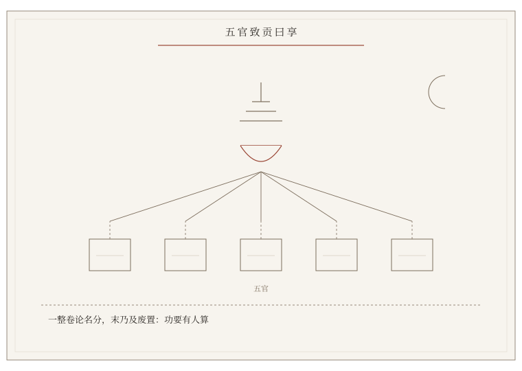

曲礼下 · 二·四十八 · 第 171 课
五官岁终各致其功于王，谓之享。注「贡，功也。享，献也」。疏辨「五官」为后以下，非五等诸侯。
说什么事：一年到头，把功交上去。曲礼下全篇的最后一节。
落在哪一层：礼。论岁终之献。
为何编在此位：上五节列天官、地官、六府、六工，此节收之以「致贡」。官的序列到功的结算为止。
【经】五官致貢曰享。
【注】貢，功也。享，獻也。致其歲終之功於王謂之獻也。《周禮·大宰》：歲終，則令百官各正其治，受其會，聽其致事，而詔王廢置。
【疏】五官，即前自后以下之五官：后一、天官二、地官三、六府四、六工五。贡，功也；享，献也。岁终，则此五官各考其属一年之功，以献于天子，故云「致贡曰享」也。王后之属致蚕织之功，天官以下各献其职之功。引《周礼》证岁终百官各献其功，以礼诏告也。周则冢宰至岁终，受于百官之簿书所会之最，而考一年之功多少，以告天子也。若功少则废黜其人，功多则迁置其职也。今谓五官，则上天子五官司徒以下，故下云「五官之长曰伯」，与此五官一也。但大宰总摄群职，总受五官之贡，故不入其数也。若以五官为后以下，则下云「五官之长」，岂有长于后乎？熊氏以为五等诸侯，亦非也。
致贡 注「贡，功也」。致其岁终之功。
享 注「享，献也」。献于王。
会 《周礼》「受其会」，谓簿书之总。
废置 疏「功少则废黜其人，功多则迁置其职」。
五官之长曰伯 下节之文，疏引以证五官为司徒以下。
五官在岁终把一年的功绩献给天子，这叫「享」。
「享」本是祭献之字，此处用来称臣下献功。一字之移，把行政的结算抬高到了礼的层面。曲礼下以此收篇：讲了一整卷的名分、器数、辞令、官制，最后落到一句话——年底把账交上来。
第一层 贡之为功 注不训「贡」为赋，训为「功」。所献者不是物，是一年的成效。此一训极要：礼制中的贡献，首重事功。
第二层 五官之辨 疏驳两说：一说五官为后以下（后、天官、地官、六府、六工），一说为五等诸侯。疏取后者为司徒以下之五官，理由是下节有「五官之长曰伯」——若五官指后以下，岂有长于后之人。此辨见疏之细。
第三层 大宰不入其数 疏「大宰总摄群职，总受五官之贡，故不入其数」。总摄者不在被计之列。此理至今可通。
第四层 废置 《周礼》岁终之制，考功而后废置。礼不止于序位，还管去留。曲礼下全卷论名分，末乃及黜陟，是收得住的一笔。
与今日何干 一年到头的述职，从周礼到今天，形式变了，理没变：功要有人算，算完要有人定去留。
| 左 | 右 |
|---|---|
| 五官致贡曰享 | 岁终献功于王 |
| 贡，功也 | 所献者事功，非物 |
| 享，献也 | 祭献之字移用于臣 |
| 五官＝司徒以下 | 疏引「五官之长曰伯」为证 |
| 大宰总摄 | 故不入其数 |
| 功少废黜，功多迁置 | 礼亦管去留 |
画一幅岁终结算的场面：画幅下方横排五枚等大的小方牌，牌面各画一道横线（示五项功状）；五牌各引一道竖线向上，汇聚于画幅中央偏上的一只敞口小盘（示「献」）；盘上方画一顶极简的冠形（只画三道横与一条竖，示受献者）。画面右上角画一枚小小的月牙（示岁终）。不写文字、不画人。赭色只用在中央那只小盘的口沿。
